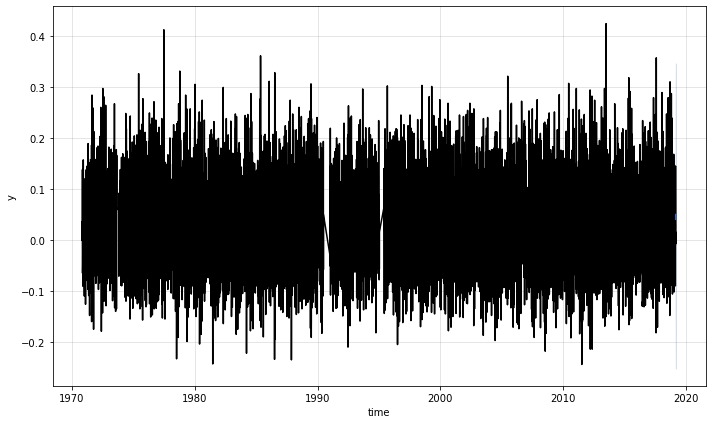

9. Sarima and Prophet models¶
add theory and check behaviour…
# arrays
import numpy as np
import pandas as pd
import xarray as xr
# plotting
import matplotlib.pyplot as plt
import matplotlib.dates as mdates
# basic
import os, sys
import warnings
# kats
from kats.consts import TimeSeriesData
from kats.models.sarima import SARIMAModel, SARIMAParams
from kats.models.prophet import ProphetModel, ProphetParams
from kats.utils.backtesters import BackTesterSimple
warnings.simplefilter(action='ignore')
# append sscode to path
sys.path.insert(0, os.path.join(os.path.abspath(''), '..'))
from sscode.data import load_moana_hindcast, Loader
data = Loader(data_to_load=['cfsr_','moana','uhslc'], plot=True)
data not available for the predictor!!
loading the Moana v2 hindcast data...
loading and plotting the UHSLC tidal guages...
data.predictand, data.validator
(<xarray.Dataset>
Dimensions: (site: 1448, time: 209736)
Coordinates:
* site (site) int64 0 1 2 3 4 5 6 7 ... 1441 1442 1443 1444 1445 1446 1447
* time (time) datetime64[ns] 1994-01-17 1994-01-17T01:00:00 ... 2017-12-09
Data variables:
elev (site, time) float32 ...
lat (site) float64 -50.96 -50.96 -50.96 -50.96 ... -34.36 -34.36 -34.36
lon (site) float64 166.0 166.0 166.1 166.2 ... 172.9 172.9 173.0 173.1
msea (site, time) float32 ...
res (site, time) float32 ...
ss (site, time) float32 nan nan nan nan nan ... nan nan nan nan nan
tide (site, time) float32 ...
trend (site, time) float32 ...,
<xarray.Dataset>
Dimensions: (name: 12, time: 437507)
Coordinates:
* time (time) datetime64[ns] 1970-01-17 ... 2019-12-15T10:00:00
* name (name) <U14 'a_Wellington' 'a_Timaru' ... 'a_Napier' 'a_Nelson'
latitude (name) float64 -41.28 -44.38 -43.98 ... -37.65 -39.48 -41.27
longitude (name) float64 174.8 171.2 168.6 174.5 ... 176.2 176.9 173.3
Data variables:
elev (name, time) float32 1.415 1.495 1.435 1.275 ... 1.767 2.57 3.276
trend (name, time) float32 1.007 1.007 1.007 ... 2.446 2.446 2.446
tide (name, time) float32 0.394 0.452 0.39 ... -0.73 -0.013 0.695
msea (name, time) float32 nan nan nan nan nan ... nan nan nan nan nan
ss (name, time) float32 nan nan nan nan nan ... nan nan nan nan nan
res (name, time) float32 nan nan nan nan nan ... nan nan nan nan nan
Attributes:
longitude: 174.7830047607422
latitude: -41.28300094604492)
data_ss = TimeSeriesData(
data.validator.sel(name='a_Wellington').ss.resample(time='1D').max().\
dropna(dim='time').to_dataframe()[['ss']].reset_index()
)
data_ss
| time | ss | |
|---|---|---|
| 0 | 1970-11-13 | 0.030 |
| 1 | 1970-11-14 | 0.036 |
| 2 | 1970-11-15 | 0.004 |
| 3 | 1970-11-16 | -0.002 |
| 4 | 1970-11-17 | 0.048 |
| ... | ... | ... |
| 17127 | 2019-02-13 | 0.100 |
| 17128 | 2019-02-14 | 0.088 |
| 17129 | 2019-02-15 | 0.074 |
| 17130 | 2019-02-16 | -0.008 |
| 17131 | 2019-02-17 | 0.015 |
17132 rows × 2 columns
# create SARIMA param class
sarima_params = SARIMAParams(
p = 2,
d = 1,
q = 1,
trend = 'ct',
seasonal_order = (1,0,1,12)
)
# initiate SARIMA model
s = SARIMAModel(data=data_ss, params=sarima_params)
# fit SARIMA model
s.fit()
# generate forecast values
fcst = s.predict(
steps = 7,
freq = '1D'
)
# make plot to visualize
s.plot()

# create a Prophet model param instance
prophet_params = ProphetParams(seasonality_mode='multiplicative') # additive mode gives worse results
# create a prophet model instance
p = ProphetModel(data_ss, prophet_params)
# fit model simply by calling m.fit()
p.fit()
# make prediction for next 30 month
fcst = p.predict(steps=7, freq='1D')
# plot to visualize
p.plot()
INFO:fbprophet:Disabling daily seasonality. Run prophet with daily_seasonality=True to override this.
Initial log joint probability = -338.954
Iter log prob ||dx|| ||grad|| alpha alpha0 # evals Notes
70 19250 9.58564e-05 113.536 7.584e-07 0.001 135 LS failed, Hessian reset
95 19250 4.80859e-07 96.8331 0.7196 0.7196 167
Optimization terminated normally:
Convergence detected: relative gradient magnitude is below tolerance
backtester_errors = {}
ALL_ERRORS = ['mape', 'smape', 'mae', 'mase', 'mse', 'rmse']
backtester_sarima = BackTesterSimple(
error_methods=ALL_ERRORS,
data=data_ss,
params=sarima_params,
train_percentage=75,
test_percentage=25,
model_class=SARIMAModel)
backtester_sarima.run_backtest()
backtester_errors['sarima'] = {}
for error, value in backtester_sarima.errors.items():
backtester_errors['sarima'][error] = value
backtester_prophet = BackTesterSimple(
error_methods=ALL_ERRORS,
data=data_ss,
params=prophet_params,
train_percentage=75,
test_percentage=25,
model_class=ProphetModel)
backtester_prophet.run_backtest()
backtester_errors['prophet'] = {}
for error, value in backtester_prophet.errors.items():
backtester_errors['prophet'][error] = value
INFO:fbprophet:Disabling daily seasonality. Run prophet with daily_seasonality=True to override this.
Initial log joint probability = -297.699
Iter log prob ||dx|| ||grad|| alpha alpha0 # evals Notes
69 14203.2 8.88753e-06 77.3356 1.018e-07 0.001 131 LS failed, Hessian reset
99 14203.2 0.000379171 97.7229 0.6436 0.6436 166
Iter log prob ||dx|| ||grad|| alpha alpha0 # evals Notes
156 14204.3 5.95724e-07 87.0247 1 1 240
Optimization terminated normally:
Convergence detected: relative gradient magnitude is below tolerance
pd.DataFrame.from_dict(backtester_errors)
| sarima | prophet | |
|---|---|---|
| mape | inf | inf |
| smape | -101.366808 | 0.200139 |
| mae | 0.078217 | 0.068661 |
| mase | 1.700160 | 1.492438 |
| mse | 0.009134 | 0.007428 |
| rmse | 0.095574 | 0.086186 |